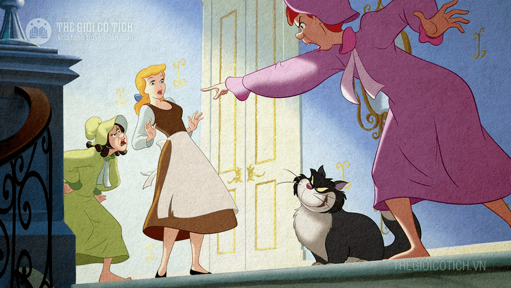

1. Ngày xưa, có một nhà giàu vợ chết sớm để lại cho ông một cô con gái độc nhất. Sau, ông ta cưới một bà vợ kế. Bà này tính tình rất cay nghiệt và đanh ác. Bà ta cũng có hai cô con gái tính nết giống hệt mẹ. Còn cô con gái con bà vợ trước thì vừa đẹp người lại đẹp nết, tính tình hiền lành, tốt bụng chẳng khác gì mẹ cô hồi còn sống.
Vốn ghen ghét đứa con chồng nết na thùy mị được mọi người quý mến hơn hai cô con gái xấu người xấu nết của mình, bà ta bắt cô chị phải làm lụng vất vả suốt ngày để hầy hạ cả nhà: nào gánh nước, nấu ăn, rửa bát, nào lau cầu thang, quét dọn buồng riêng của bà và của hai cô em gái. Đã thế cô chị lại phải ngủ một mình trên gác xép[2] chứa đồ đạc tối tăm, bụi bậm. Còn hai cô em được ngủ trong một căn buồng sang trọng trên những chiếc giường nệm trắng tinh, có cả tủ gương bóng lộn.